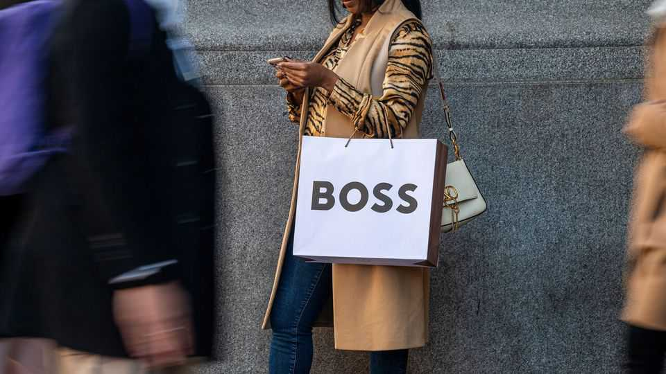

The battle for Hugo Boss
A British retail magnate tries to go upmarket

Jul 30th 2026
Hugo Boss once made brown shirts for the Nazi Party and uniforms for the Wehrmacht. Before long the German fashion label may be controlled by a Tommy. Last month Mike Ashley, a British retail tycoon, unveiled a €2bn ($2.3bn) cash offer for the 74% of shares in Hugo Boss that he did not already own, subject to regulatory approval. On July 27th the European Commission gave its clearance for a deal. Shareholders of Hugo Boss now have until August 13th to decide whether to accept Mr Ashley’s offer.
The management and supervisory boards of Hugo Boss oppose the deal, arguing that it “does not adequately reflect the company’s value and its future potential”. Many investors seem to agree. Uwe Rathausky, chief executive of GANÉ Investment, a fund manager with a stake in the fashion label, says that Mr Ashley’s proposal of €38 a share “significantly undervalues” Hugo Boss. Its shares have been trading at €36-37 for most of this year, meaning the premium offered is modest.
Mr Ashley, however, may be biding his time. Under German law, he was required to initiate a takeover offer once his stake in Hugo Boss passed 30%, as it now has. If the company continues to flounder, he will be in a strong position to take it over.
Mr Ashley joined the shareholder register in 2020 with a stake of 5%. The following year Daniel Grieder, formerly the boss of Tommy Hilfiger, an American fashion label, was brought in as chief executive. He relaunched the dowdy brand by splitting it into two labels: Hugo for Gen-Z shoppers and BOSS aimed at millennials (and older clientele wishing to dress like them). The refresh, coupled with a push into e-commerce, led sales to soar and pushed the company’s share price to a peak of over €75 in July 2023, up from €46 when Mr Grieder took over.
Since then, however, the business has struggled. Sales in China and Britain, two of its most important markets, have slumped amid weak consumer spending. In December last year the company issued a profit warning and unveiled a fresh strategy focused on boosting the image of its labels, improving distribution and trimming costs, with up to 50 shops to be closed by 2028. But Mr Grieder’s new plan has yet to bear fruit: operating profit was down by 42%, year on year, in the first quarter of 2026.
Mr Ashley made his fortune from Sports Direct, a British sportswear retailer he founded in 1982. Over the years he bought struggling but popular sports brands such as Lonsdale, Dunlop and Slazenger. Then in 2018 he acquired House of Fraser, a 170-year-old chain of British department stores, hours after it declared bankruptcy. The following year he renamed his conglomerate Frasers Group, and in 2022 handed over day-to-day operations to his son-in-law, Michael Murray.
Lately Frasers has been on a buying spree. In March it purchased just under 6% of Puma, a German sportswear brand. In June it launched a takeover bid for Accent Group, an Australian group of footwear retailers. And on July 28th it disclosed a 4% stake in Burberry, a British luxury brand. It has reportedly also joined the bidding for Harvey Nichols, a posh department store. The string of deals form part of the group’s “Elevation” strategy, under which it plans to shift away from budget offerings towards pricier wares.
As for Hugo Boss, rumours suggest Frasers is exploring ways to install Mr Murray as its chief executive in place of Mr Grieder, whose contract runs until 2028. Mr Murray already sits on the 12-person supervisory board. If he is appointed to the top job, he would be the first British boss of the German brand, which has its headquarters in the small town of Metzingen, in the state of Baden-Württemberg. It could be in for a culture shock. ■